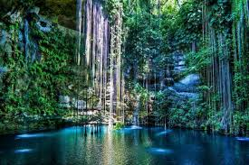

EL MUNDO ESTA LLENO DE PAISAJES HERMOSOS...CONOCELOS.

¿Quieres mas información? Ven y compruebalo tu mismo
El turismo puede ser doméstico (turistas dentro de su propio país) o internacional... Este último es hoy una importante fuente de ingresos para muchos países. En el año 2015 hubo 1187 millones de desplazamientos turísticos internacionales, siendo los países más visitados
Francia (84 millones)
Estados Unidos (77 millones)
España (68 millones)
China (56 millones)
Italia (46 millones)
A comienzos de la década de 1930, uno de los primeros teóricos de la Escuela Alemana de los estudios en Turismo, Arthur Bormann define el turismo como el conjunto de viajes realizados por placer o por motivos comerciales y otros análogos, durante los cuales la ausencia de la residencia habitual es temporal. No son turismo los viajes realizados para trasladarse al lugar de trabajo.4
Los pioneros teóricos en Turismo, Walter Hunziker y Kurt Krapf, dicen en 1942 que «El turismo es el conjunto de relaciones y fenómenos producidos por el desplazamiento y permanencia de personas fuera de su domicilio, en tanto que dichos desplazamientos y permanencia no están motivados por una actividad lucrativa».5
El término «turismología» surgió en la década de 1960, fue el pensador yugoslavo Živadin Jovičić (geógrafo en su formación académica) el científico considerado «padre de la turismología», quién lo popularizó cuando fundó la revista del mismo nombre en 1972. Jovicic consideraba que ninguna de las ciencias existentes podía realizar el estudio del turismo en toda su dimensión, por considerar que sus aportaciones son unilaterales. Esto lo permitiría la creación de una ciencia independiente, la turismología.
En la década de 1990, La Organización Mundial del Turismo (OMT) define al Turismo como "El turismo comprende las actividades que realizan las personas durante sus viajes y estancias en lugares distintos al de su entorno habitual, por un período de tiempo consecutivo inferior a un año con fines de ocio, por negocios y otros". 6
Hacia finales del siglo XX, el profesor Jafar Jafari entiende al turismo como un fenómeno interdisciplinar, que implica una relación compleja entre perspectivas de la Economía, Educación, Geografía, Historia, Hospitalidad, Derecho, Ocio y Recreación, Marketing, Ciencia Política, Psicología, Religión, Sociología, Transporte, Planificación Urbana y Regional, Agricultura, Antropología, Negocios y Ecología. En su trabajo académico, también afirma que el "turismo es más que un arte —es una táctica para atraer, trasportar, recibir, dar acomodo, entretener y servir al turista. El turismo se ha convertido en una ciencia— una dialéctica de estudio, análisis y conexión con todas las estructuras que lo influyen y son influidas por él", asegurando que representa «el mayor movimiento pacífico de población en tiempo de paz de la historia de la humanidad». 7
En su clásica publicación académica de 1997, el epistemólogo del Turismo de la Universidad de Surrey John Tribe define al turismo como "el conjunto de fenómenos y relaciones surgidas de la interacción en regiones generadoras y anfitrionas, de turistas, proveedores de negocios, gobiernos, comunidades y ambientes". 8
Por otro lado, en su artículo académico de 2007, el profesor de la Universidade de São Paulo Alexandre Panosso Netto argumenta que "el turismo es experiencia, en el momento en que construye ese "ser" turista", y que "las impresiones internas de esa acción no se forman sólo en el viaje o en el desplazamiento propiamente dicho, sino también son vividas en los momentos que anticipan el acto del turismo y en los momentos que prosiguen después que el "ser" turista ha emprendido su viaje. 9